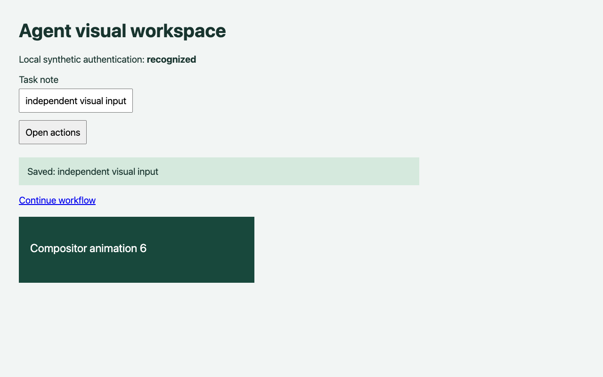

Chrome extension + MCP server
Your agent needs Chrome. So do you.
AgentLane gives your coding agent its own window inside your logged-in Chrome: real screenshots, clicks and typing, separate from your keyboard and pointer. You keep working. The agent keeps working. Neither waits.
- Experimental
- macOS + Google Chrome
- Node.js 22+
- MCP over stdio
- MIT
Launch notes
Invoices · acme.app
How it works
Share the logins. Not the input.
Your physical keyboard and pointer drive your Chrome window. The agent never touches them: it sees pixels and sends tab-targeted input to a tab it owns, in a separate window, inside the same Chrome profile. Select any step to see what it really does.
- One tab per connection. The host assigns each socket a random session ID. There is no tool to list, select or read your tabs.
- Eight fixed tools. No raw CDP, no arbitrary JavaScript, no cookie access, no OS shortcuts.
- Screenshot, then one input. Every click, key or scroll spends a single-use frame token from the latest screenshot.
See it
Screenshot. Token. One action.
The agent works like a careful person with a remote screen: look, then act once, then look again. Try the loop below. It is a small model of the protocol, not the real extension.
Agent visual workspace
Synthetic session: recognized
Start with lane_screenshot. Then click the note field or the Save button in the tab above.
The real thing



Real screenshots from a disposable Chrome profile with a synthetic demo session. They are not a recording of simultaneous use; test results are in the evidence log.